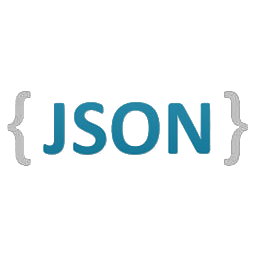
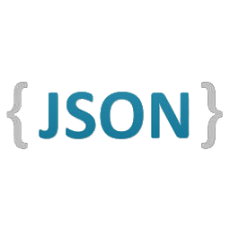

Javier Rengel
Senior Full-stack Engineer
Javier Rengel
Senior Full-stack Engineer
I'm a senior software engineer with over 12 years of experience. I specialize in backend web development, but I have experience and a good understanding of the full stack, from frontend to devops. I'm most productive at present with the Typescript, Python and Scala ecosystems, however I consider myself to be technology-agnostic, and can quickly adapt to any language and framework.
Most of my professional experience has been with startups in London. I enjoy the thrill of building something brand new, plus the fast paced environment and good vives with a small and dedicated team.
I'm currently working fulltime, but feel free to get in touch to discuss a collaboration in the future.
During my spare time I am also constantly learning new technologies and building pet projects of very different natures: from web apps to videogames to mobile apps to electronics. I share them in my blog, Coconauts.net.
Favourite technologies: Typescript, Python, Scala, React, AWS, GCP, Docker, Kubernetes, Redis, PostgreSQL
This is a list of my previous companies, and some technologies and stuff I've done there
If you are interested on how I code, here there are a few easy-to-review popular (starred) projects showcasing different technologies, that you can check on Github.
This is a simple template service file to help you building a service in Go using gRPC but also keeping the API compatible with REST so you can use it standalone for web development without any API layer.
This is an app for Android that allows you to send notifications from your Android device to any web address for processing notifications on your own apps or receive in your smartwatch
Ideal docker microservice Infrastructure with multiple languages (Python + NodeJS), databases and unit, integration and behaviour tests
NodeJS + Express + Elasticsearch showcase app to search Pokemons
Javier has been our most productive developer over the past year. Notably, Javier has been reliably productive in both high and low morale environments. He's a great, friction-less team member - he always has cool side projects to share. Javier has a systematic approach, and he delivers consistent, well-tested code. He always has a great local dev environment setup, and combined with fast iterations on unit and integration tests, makes you feel very productive pair-programming with Javier.
Douglas Hindson Lead Backend Developer at Lantum
Javier has been with the company for over two and half years, and is a committed and talented developer with strong experience in Scala (inc. Akka, Play), Java, and the AWS platform. Aside from his technical skills, Javier is an absolutely brilliant guy to have in the team with a positive, can-do attitude, a great sense of humour and unbridled enthusiasm for technology. In his spare time he develops indie computer games and is building a smartwatch.
Tom Leathes Motorway CEO
Javier and I worked together in NetworkLocum. We were backend colleagues. He’s a top-notch engineer, and a model I tried to follow while working with him. He had more experience than me in the environment and in the company, he has been always supportive and willing to help, not only me but everyone around. His standards of quality are quite high, and he is always trying to improve the test environments and promoting best practices.
Marga Rodríguez Software engineer at Network Locum
Javier has proven himself to be a valuable asset ot both the team and the company. He is a skilled developer and works well, both with his team mates and the customer, to get projects completed on time to a high standard. Javier often takes the initiative to develop new scripts and software to help out the team and can be trusted to work autonomously on tasks.
Robert Hayward Technical Lead at Openbet
Some pet projects that I feel particularly proud of
WatchDuino 2 is a SmartWatch built in Arduino that uses Bluetooth for sending messages to Android, finalist on the Hackaday Prize 2015.
A web emulator of NES games with Achievements and multiplayer gameplay via websockets, featured on Hackernews.
My CV is available in different and unusual formats, check it by yourself:
 


The original file is written in markdown, all other files are generated using that markdown file (even json). For HTML and ODT I use pandoc, for json I built my own markdown parser using a nodejs script. You can read more about this in my Github repo